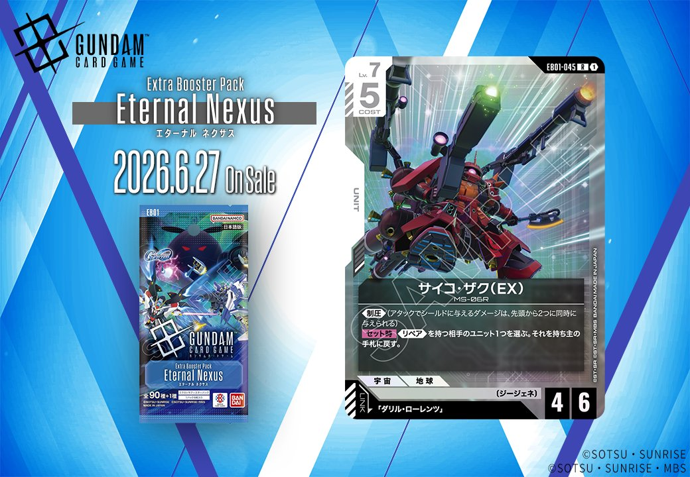

EB01「Eternal Nexus」から、白色の新たなリンクカード2枚が登場。パイロット「ダリル・ローレンツ」とユニット「サイコ・ザク (EX)」は、「ダリル・ローレンツ」をリンク条件とする組み合わせで、白色デッキに新たな選択肢をもたらします。

ダリル・ローレンツ (EB01-070)
| 色 | 白 | タイプ | PILOT |
| Lv | 4 | コスト | 1 |
| 補正 AP | 2 | 補正 HP | 1 |
| 特徴 | 〔ジージェネ〕、〔支援型〕 | ||
効果: 【バースト】このカードを手札に加える。【リンク中】【起動・アクション】ターン1回 1:相手のターンなら、ユニット1つを選ぶ。このバトル中、それをAP+1する。
ダリル・ローレンツは白色のLv.4パイロットで、相手ターン中に味方ユニットのAPを+1できる防御支援型カード。リンク中限定かつターン1回の制限があるものの、COST1で手札からバーストできる点は優秀で、ジージェネシリーズの防御戦術を支える一枚となりそう。 白色ジージェネデッキでは、マーク・ギルダーなど他の支援型パイロットと組み合わせることで、相手のアタックを凌ぐ堅実な戦術が期待できる。



サイコ・ザク (EX) (EB01-045R)
| 色 | 白 | タイプ | UNIT |
| Lv | 7 | コスト | 5 |
| AP | 4 | HP | 6 |
| 特徴 | 〔ジージェネ〕 | ||
| リンク条件 | 「ダリル・ローレンツ」 | ||
効果: 《制圧》（アタックでシールドに与えるダメージは、先頭から2つに同時に与えられる） セット《リペア》を持つ相手のユニット1つを選ぶ。それを持ち主の手札に戻す。
サイコ・ザク(EX)は、COST5でAP4/HP6、《制圧》と相手の《リペア》持ちユニットをバウンスする能力を持つLv.7ユニット。《制圧》によりシールドエリアへの圧力が高く、《リペア》持ちユニットを手札に戻すことで相手の持続的な戦力を崩せる点が特徴的。ダリル・ローレンツとのリンクにより、さらなる強化も期待できる白色の優秀なフィニッシャー候補。
リンク対象カード
関連カード
-
 ユウ・カジマ(EB01-072)NEW白系 — 同色・共通特徴: ジージェネ（新カード）
ユウ・カジマ(EB01-072)NEW白系 — 同色・共通特徴: ジージェネ（新カード） -
 ブルーディスティニー1号機(EX)(EB01-043)NEW白系 — 同色・共通特徴: ジージェネ（新カード）
ブルーディスティニー1号機(EX)(EB01-043)NEW白系 — 同色・共通特徴: ジージェネ（新カード） -
 マーク・ギルダー(ST10-012)NEW白系 — 同色・共通特徴: ジージェネ、支援型（新カード）
マーク・ギルダー(ST10-012)NEW白系 — 同色・共通特徴: ジージェネ、支援型（新カード） -
 フェニックスガンダム (能力解放) (EX)(ST10-006)NEW白系 — 同色・共通特徴: ジージェネ（新カード）
フェニックスガンダム (能力解放) (EX)(ST10-006)NEW白系 — 同色・共通特徴: ジージェネ（新カード） -
 ティファ・アディール&フリーデン(EB01-090)NEW白系 — 同色・共通特徴: ジージェネ（新カード）
ティファ・アディール&フリーデン(EB01-090)NEW白系 — 同色・共通特徴: ジージェネ（新カード） -
 ダリル・ローレンツ(EB01-070)NEW白系 — リンク先（新カード）
ダリル・ローレンツ(EB01-070)NEW白系 — リンク先（新カード）